Питание
По питанию начнём постепенно. Это самый действующий способ
1-2 недели:
-
Из самого простого это начни пить воду 2,5л в сутки равномерно.Это для
поддержки метаболизма и вывода излишков токсинов и продуктов распада
из тела. Это очень важный момент.
-
Полностью исключи питание после 19:30. Не важно успел ли ты поесть
нормально в течении дня, это этот коридор с 19:30 и до утра очень
важен.
На первые 2 недели это пока всё. Дай организму привыкнуть и спокойно
переносить такой режим.
2-4 недели:
После, если уже спокойно держишь себя в таких рамках (если ещё
предыдущие советы даются с трудом, то не переходи к след пунктам, а
увеличь срок ещё на 2 недели), то дополнительно исключи сахар из
рационаю. Это:
- сахар в чистом виде.
-
газированые напитки, соки с магазины (даже консервированые натуральные
соки с большим содержанием сахара нужно держать от себя подальше.
Исключением может быть свежевыжатые соки - сам перемолом и сразу
выпил)
- булки, пироги, торты, пироженое.
- и даже чёрный шоколад :)
4-6 недели:
Дополнительно исключи вредные жиры с рациона. Это:
- пиццы, беляши, разного рода фаст-фуд.
- разные снеки копчённые, валеные.
-
вцелом весь асортимент продуктов питания, которые готовяться в олии.
Отдельным вопросом алкоголь. Весь список точно в топку. За исключением
вино и крепкие напитки (снова же без колы, фанты ит.д.), и то это только
в редких случаях, если прям очень хочется.
Это постепенный план вхождения в нормальный режим питание. Не форсируй
его и не пытайся ухватить всё и сразу. Поверь, многие попадают в такую
ловушку и потом срываются. Лучше постепенно и не спеша. В идеале ты с
такими промежутками вообще не почувствуешь никакого стресса и перейдёшь
от пункта к пункту без дискомфорта.
Через 6 недель твой основной рацион должен состоять из:
- крупы, все виды.
- овощи, все виды.
- мясо, рыба на пару или тушеная (ничего жареного!).
- морепродукты любые.
- молочные продукты (творог, молоко).
- фрукты, все виды.
-
отдельно выделю пункт под картошку. Она не должна превыщать 15% от
всего обьема твоего питания.
Вот из этого ты можешь спокойно комбинировать себе разные блюда.
Повторюсь, только варёное, на пару или тущеное. Очень важно не дать
трещины в этот период. Если в какой-то момент начнёт ломать, то всегда
'заправляй' себя фруктами и жирной рыбой или мясом. Чаще всего телу
нужно именно это. Не всегда то, что хочется действительно нужно :)
Это твой план на первые 6 недель...
Тренировки
Вертикальная тяга (1a)
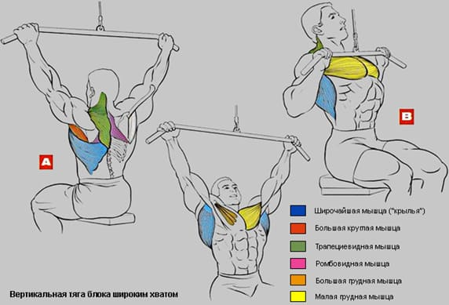
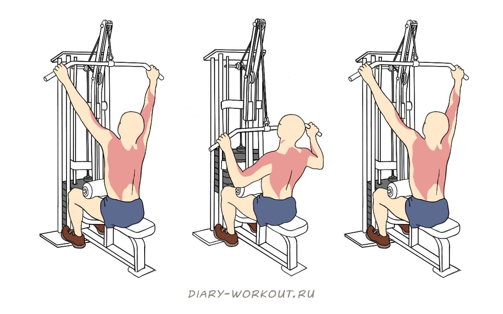
Горизонтальная тяга (1b)
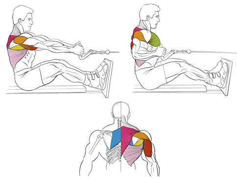
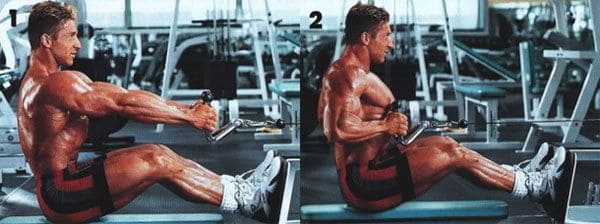
Становая тяга (1с)
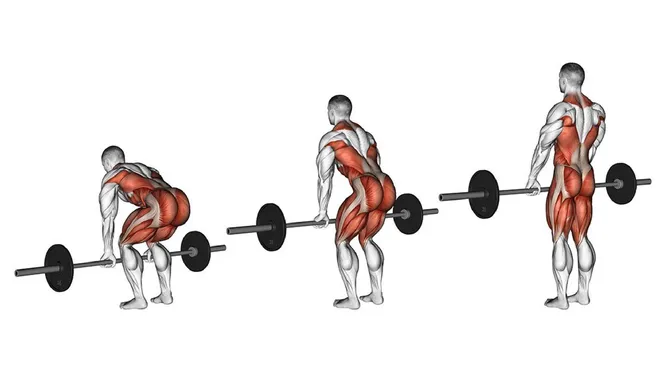
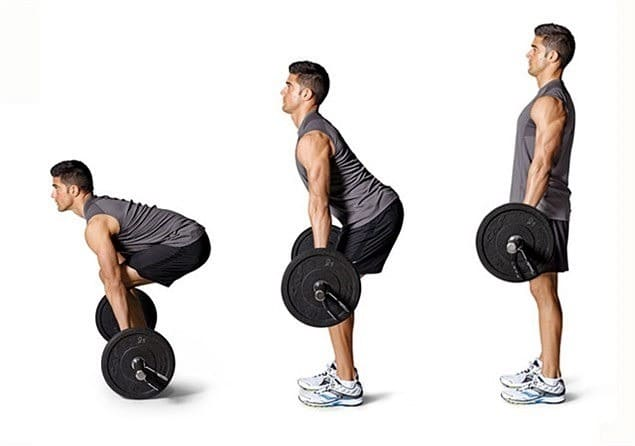
Разгибание на трицепс (2b)
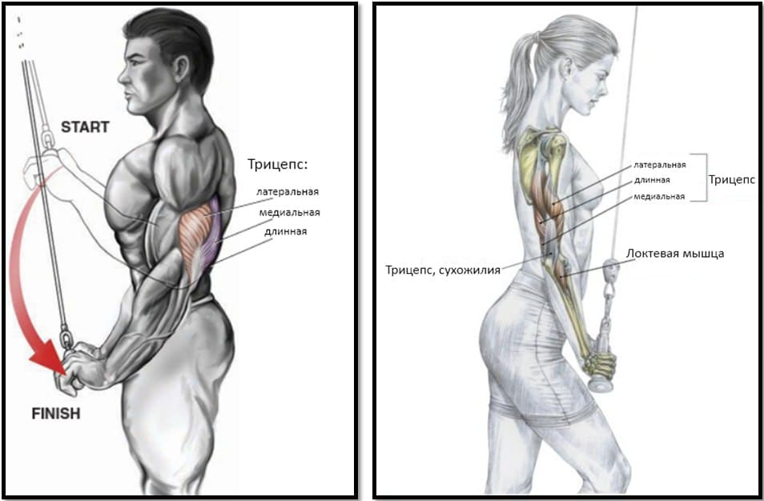
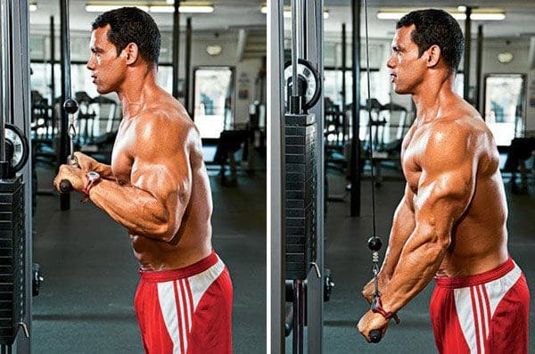
Подьем на бицепс (2a)
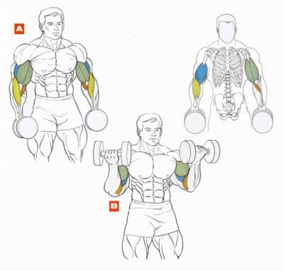
Махи рук в стороны (2e)
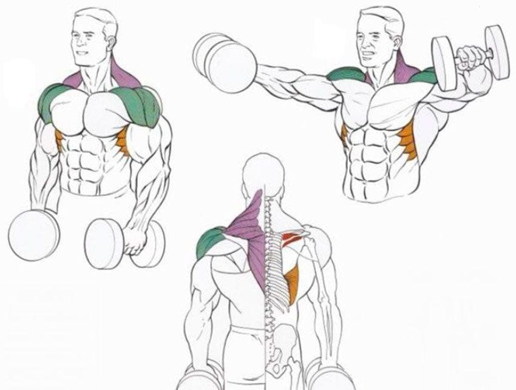
Разгибание бедра сидя (2n)
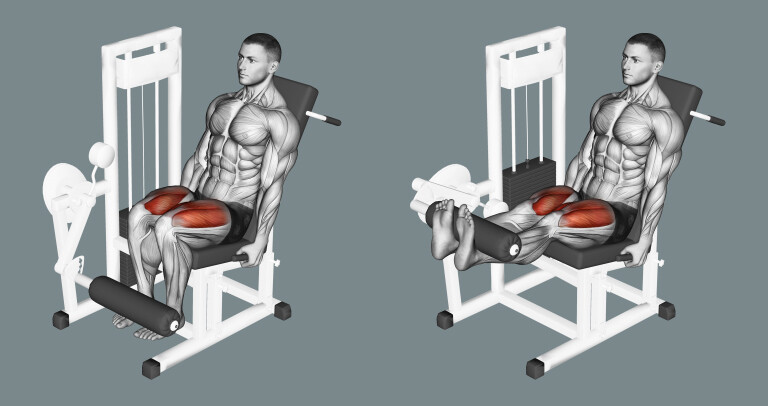
По тренировкам тоже всё постепенно. Очень важно, скажем так,
синхронизировать питание и тренировки. Тело полюбому будет метаболиски
изменятся от перестройки питания, и важно в этот момент чрезмерными
тренировками не изпоганить этот процесс.
Каждая треня не должна занимать больше 1 часа (это уже вместе с
разминкой). Но и за этот час нужно максимально шустро и качественно
проделать всю програму.
** всегда перед тренировкой ты разминаешься. Всегда! Это 10 минут кардио
(бег, велотренажер, гребля, орбитрек. В зависимости что у тебя в зале
есть. Можешь каждую треню чередовать вид кардио). Оно подготовит твоё
сердце, сосуды, давление к нагрузкам.
*** каждую треню у тебя будет базовые упражнения. К ним тоже нужно
подготовиться. Тут всё очень просто. После кардио делаешь
подготовительные упражнения для базы. Ниже пишу: {базовое упражнение} -
{подготовительное упражнение для разогрева} :
-
жим на грудь - разгибание трицепса с канатом/грифом. 2 подхода по 15
раз 10 кг.
- присед - разгибание бедра сидя (2n). 2 подхода по 15 раз 20кг.
-
вертикальная/горизонтальная тяга - подьем гантелей на бицепс. 2
подхода по 15 раз по 8 кг на руку.
Уточню, подготовительные упражнения всегда делаются с лёгким весом. Их
задача разогреть уязвимые для травмы мышцы, которые учавствуют в базе. В
програме ты сможешь увидеть эти же упражнение, но с другими весами. Это
уже будут рабочие подходы. Простыми словами, ничего удивительно, если ты
в наччале будешь делать, к примеру, разгибаниие на трицепс для разогрева
и через время это же упражнение как рабочий подход
План:
Первые 2 недели будут относительно лайтовыми
1 неделя:
-
-
Вертикальная тяга (1a). 3 подхода по 10 раз. Вес 25, 30, 35 кг.
- Присед (1f). 3 подхода по 30 раз. Без веса
-
Жим лёжа (1p). 3 подхода по 10 раз. Вес по 5кг по бокам. (гриф
обычно 20 кг весит + 2*5 кг = 30кг)
- Кардио 30 минут беговой дорожки
-
- Горизонтальная тяга (1b). 3 подхода по 10 раз. Вес 20 кг
- Жим ног (1е). 3 подхода по 15 раз. Вес накинь 20 кг.
- Отжимание чистые или с колен. 3 по 15 раз
- Кардио 30 мин велотренажер
-
-
Вертикальная тяга (1a). 3 подхода по 10 раз. Вес 25, 30, 35 кг.
- Присед (1f). 3 подхода по 30 раз. Без веса
- Жим лёжа (1p). 3 подхода по 10 раз. Вес по 5кг по бокам.
- Кардио 30 минут беговой дорожки
p.s не забывай, что тебе нужно уложиться на каждой трене в 60 - 70 мин.
2 неделя:
-
- Горизонтальная тяга (1b). 3 подхода по 10 раз. Вес 25 кг
- Жим ног (1е). 3 подхода по 15 раз. Вес накинь 25 кг.
- Отжимание чистые или с колен. 3 по 20 раз
- Кардио 30 мин велотренажер
-
-
Вертикальная тяга (1a). 3 подхода по 10 раз. Вес 30, 35, 40 кг.
- Присед (1f). 3 подхода по 40 раз. Без веса
- Жим лёжа (1p). 3 подхода по 10 раз. Вес по 7кг по бокам.
- Кардио 30 минут беговой дорожки
-
- Горизонтальная тяга (1b). 3 подхода по 10 раз. Вес 25 кг
- Жим ног (1е). 3 подхода по 15 раз. Вес накинь 25 кг.
- Отжимание чистые или с колен. 3 по 20 раз
- Кардио 30 мин велотренажер
2.3
3-4 недели добавим упражнений на проработку отдельных мышц
3 неделя:
-
- Вертикальная тяга (1a). 3 по 10. Вес 30, 35, 40 кг.
- Отжимание 4 по 20.
- Жим ног (1е) 4 по 15. 25 кг.
- Махи в стороны (2e). 4 по 10. По 5 кг.
- Кардио 20 мин. Бег.
-
- Горизонтальная тяга (1b). 3 по 10. 25кг.
- Жим лёжа (1p). 4 по 10. 7кг.
- Присед (1f) 4 по 40.
- Подьем на бицепс (2a). 4 по 15. 10кг
- Кардио 20 мин. Вело.
-
- Вертикальная тяга (1a). 3 по 10. 35, 40 кг.
- Отжимание 4 по 20.
- Жим ног (1е) 4 по 15. 25 кг.
- Разгибание на трицепс (2b). 4 по 15. 15кг.
- Кардио 20 мин. Бег.
4 неделя:
-
- Горизонтальная тяга (1b). 3 по 10. 25кг.
- Вертикальная тяга (1a). 3 по 10. 30кг.
- Подьем на бицепс (2a). 4 по 15. 10 кг.
- Махи в стороны (2e). 4 по 15. по 5 кг.
- Кардио 20 мин. Вело.
-
- Присед (1f) 4 по 40.
- Жим ног (1е). 4 по 15. 25 кг.
- Разгибание бедра сидя (2n). 4 по 15. 30 кг.
- Упражнение на икры. 4 по 15. 35кг
- Кардио 20 мин. Бег
-
- Жим лёжа (1p). 4 по 10. 7кг.
- Отжимания 4 по 20.
- Разгибание на трицепс (2b). 4 по 15. 15 кг.
- Махи в стороны (2e). 4 по 15. по 5 кг.
- Кардио 20 мин. Вело.
5-6 неделя добавим более сложные техники.
5 неделя:
-
- Присед (1f) 4 по 25.
- Становая тяга (1с). 4 по 10. Вес по 5 кг.
- Вертикальная тяга (1a). 4 по 10. 35 кг.
- Жим лёжа (1p). 4 по 10. 7 кг.
- Кардио 15 мин. Бег.
-
- Жим ног (1е). 4 по 15. 30 кг.
- Горизонтальная тяга (1b). 4 по 10. 25кг.
- Махи в стороны (2e). 4 по 15. 6 кг.
- Отжимания 4 по 20.
- Кардио 20 мин. Вело.
-
- Присед (1f) 4 по 25.
- Становая тяга (1с). 4 по 10. Вес по 5 кг.
- Вертикальная тяга (1a). 4 по 10. 35 кг.
- Жим лёжа (1p). 4 по 10. 7 кг.
- Подьем на бицепс (2a). 4 по 15. 10кг.
- Разгибание на трицепс (2b). 4 по 15.
- Кардио 10 мин. Бег.
6 неделя на закрепление становой:
6 неделя:
-
- Горизонтальная тяга (1b). 4 по 10. 30кг.
- Становая тяга (1с). 6 по 10. По 10 кг.
- Подьем на бицепс (2a). 4 по 15. 10кг.
- Кардио 30 мин. Бег
-
- Жим лёжа (1p). 4 по 10. 10 кг.
- Становая тяга (1с). 6 по 10. По 10 кг.
- Разгибание на трицепс (2b). 4 по 15. 15 кг.
- Кардио 30 мин бег
-
- Вертикальная тяга (1a). 4 по 10. 35кг.
- Становая тяга (1с). 6 по 10. По 10 кг.
- Махи в стороны (2e). 4 по 15. 6 кг.
- Кардио 30 мин. Бег